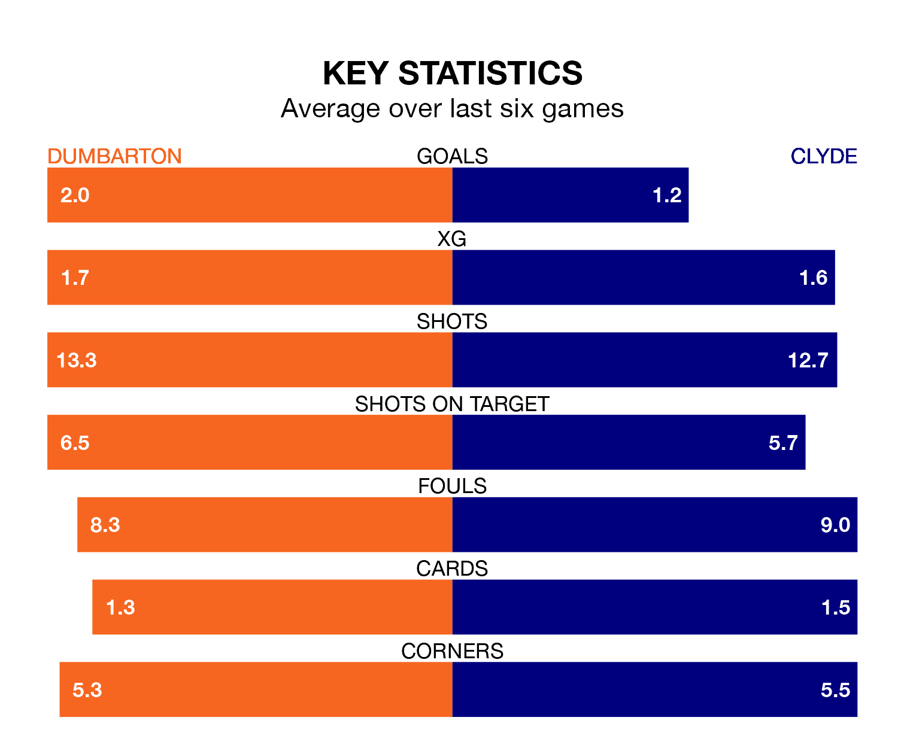

Struggling Clyde face Dumbarton away at the moreroom.com Stadium on Saturday looking to build on a win in their last league outing.
After securing all three points with a 1-0 victory over Stranraer on April 6, the Bully Wee sit bottom of League Two.
They travel to play a Dumbarton side third in the standings, who also won their last match, 2-0 against Forfar Athletic.
With 52 goals in 32 games so far this season, Dumbarton are the league's highest scorers with 1.6 goals per game. And they are conceding fewer than average, letting in 40 goals at a rate of 1.2 per game.
Clyde, meanwhile, are below average scorers, with 1.2 goals per game, compared to a league average of 1.3. They have conceded 1.7 goals per game.
In the last 10 years, Dumbarton and Clyde have played each other on 17 occasions. Dumbarton won nine of them, Clyde six, and they drew twice.
On average, the Sons scored 1.7 goals and the Bully Wee 1.3 in those matches.
Their last meeting was on February 17, when Clyde won 2-0 at home.
In Tony Wallace, the Sons have one of the league's sharpest shooters so far this season. He has notched 11 goals in 32 appearances, to sit fourth in the scoring charts.
His goal rate of one every 190 minutes is slightly quicker than that of Martin Rennie, the Bully Wee's top scorer with a goal every 187 minutes, and a total of 10 goals in 26 games.
The home team are in mixed form in League Two, with three wins and a draw from their last six games.
And also with three wins and a draw over that period, the visitors' form is identical – they have both taken 10 points from 18.
Updated: 14:47 (UTC), 09/04/24